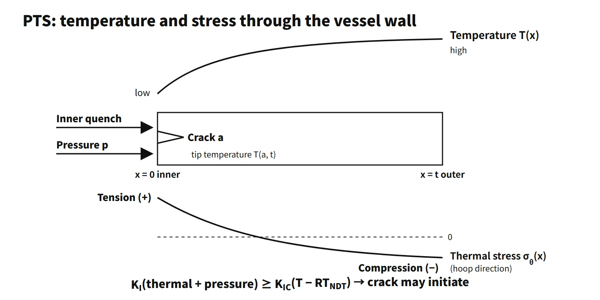

Fuel & Materials · C-FM-002
Pressurized Thermal Shock (PTS) — How Repressurization after Overcooling Threatens an Embrittled Reactor Vessel
Why rapid cooldown followed by repressurization can drive a crack in an embrittled reactor vessel, and how the RTPTS screening criteria and operator actions manage it.
Pressurized thermal shock (PTS) is an event in which the inner surface of a PWR reactor vessel is rapidly overcooled and, at the same time or immediately afterwards, subjected to high system pressure. 10 CFR 50.61(a)(2) defines it as "an event or transient in pressurized water reactors causing severe overcooling (thermal shock) concurrent with or followed by significant pressure in the reactor vessel". In beltline material embrittled by neutron irradiation, an inner-surface flaw can then grow unstably. Irradiation embrittlement is not part of the definition; it is the material condition that erodes the fracture margin.
A good first line for an exam answer: "a brittle-fracture risk to the reactor vessel in which overcooling plus repressurization (the event) combines with irradiation embrittlement (the material condition) so that KI can exceed KIC."
Principle and mechanism
Three factors combined (two event elements plus one material condition)
- Inner-surface quench: cold safety-injection water or secondary-side overcooling drops the inner-wall temperature quickly. The inner layer tries to contract but is held by the warmer outer layers, producing tensile thermal stress at the inner surface and compression at the outer surface.
- Sustained pressure or repressurization: when pressure rises again through the high-pressure safety injection pumps, charging pumps, pressurizer heaters or the reclosure of a stuck-open valve, hoop stress from pressure is added.
- Irradiation embrittlement (material condition): fast-neutron irradiation (E > 1 MeV) raises the reference nil-ductility transition temperature RTNDT of the beltline material, so at the same temperature it sits on the lower-shelf side with low fracture toughness.
RTNDT is the material reference temperature set from drop-weight (NDT) and Charpy tests. After irradiation, the shift ΔRTNDT (a function of Cu and Ni content and fluence) and a margin M are added to the initial value.
Fracture-mechanics test: KI racing KIC
The driving force and the resistance are compared at the tip of an inner-surface crack.
- Driving force KI = KI(thermal stress) + KI(pressure): it grows with thermal stress early in the overcooling and jumps again on repressurization.
- Resistance KIC(T − RTNDT): ASME Sec. XI lower-bound curve KIC = 36.5 + 22.783·exp[0.036(T − RTNDT)] MPa√m (T in °C). It falls as the crack-tip temperature falls and as RTNDT rises.
- If KI ≥ KIC, the crack initiates; it arrests if, in the deeper and warmer layers, KI does not exceed the arrest toughness KIa. If it cannot arrest, it can become a through-wall crack.
On the same overcooling path, the material state decides the outcome. At a crack-tip temperature of 100 °C, an unirradiated material with RTNDT = 0 °C has so much margin that the lower-bound value exceeds the cap assumed in the figure (220 MPa√m), whereas a material embrittled to RTNDT = 132 °C (an assumed value at the level of the screening criterion) drops to KIC of about 44 MPa√m. A crossing means that a crack may initiate from the assumed flaw; it does not mean immediate through-wall failure.
![Graph of stress intensity factor K from 0 to 220 MPa√m against crack-tip temperature from 0 to 300 °C, showing the ASME lower-bound KIC curves for RTNDT 0 °C and an example embrittled RTNDT of 132 °C shifted to higher temperature, and a conceptual KI path that stays below the embrittled curve during overcooling and crosses it on repressurization near 110 °C; side panels show a cold plume at the cold-leg nozzle, a time trace of cold-leg temperature falling from 290 to about 90 °C and pressure falling from 15.5 to about 7 MPa then rising again, and the 10 CFR 50.61 screening criteria of 270 °F (132 °C) and 300 °F (149 °C)](../../assets/images/concepts/c-fm-002-pressurized-thermal-shock/fig1-pts-k-crossing.webp)
An axial flaw faces the full hoop stress (about twice the axial stress), so it is more severe than a circumferential flaw. That is why the screening criteria differ: 270 °F for axial welds and 300 °F for circumferential welds. A crack that was first loaded at high temperature tends not to initiate while KI is decreasing (the warm prestress, WPS, effect), so the moment KI rises again on repressurization is especially dangerous.
What it means in a plant
Event types that cause PTS
- Main steam line break (MSLB) and secondary-side steam release, including stuck-open turbine bypass or atmospheric dump valves and main steam safety valves: the primary side overcools, shrinks and depressurizes → safety injection → repressurization.
- Small-break LOCA (SBLOCA): cold injection water and stagnant loop flow create cold plumes in the cold leg and downcomer.
- Stuck-open pressurizer safety valve or PORV that later recloses: depressurization and overcooling, then repressurization when the valve closes.
- Excess feedwater or excess auxiliary feedwater: overcooling of the primary side through the steam generators.
- Steam generator tube rupture (SGTR): cooldown and depressurization actions with possible repressurization.
- Medium LOCA: large cold injection (in the 50.61a re-evaluation the dominant event classes were primary pipe breaks, stuck-open primary valves that later reclose, and main steam line breaks).
Equipment that works against you
| Equipment | Why it has an adverse effect |
|---|---|
| High-pressure safety injection and charging pumps | High shutoff head repressurizes the system during cooldown |
| RWST, IRWST, SIT | Injection of cold borated water quenches the inner surface |
| RCP trip | Stagnant loop flow → local cold-water plumes |
| Pressurizer heaters and spray, PORV reclosure | Pressure rises again |
| Main and auxiliary feedwater, bypass and atmospheric dump valves | Overfeeding or stuck-open valves cause overcooling |
Operator mitigation actions
The basic framework is the reactor coolant system integrity function-recovery procedure in South Korean emergency operating procedures (the Westinghouse ERG family's "response to imminent PTS").
- Isolate the source of overcooling: isolate the faulted steam generator, stop feedwater to it, and isolate stuck-open valves.
- When the safety injection throttling/termination criteria are met (subcooling margin, pressurizer level, secondary heat removal, RCS pressure stable or rising), reduce injection flow → prevent repressurization. The SI termination criteria of Westinghouse ERG FR-P.1 are relaxed compared with other procedures, so injection can be cut earlier.
- Stop pressurizer heaters and lower pressure with auxiliary spray or the PORV to stay within the P-T limits.
- Stop further cooldown and hold (soak) the cold-leg temperature. In the Westinghouse ERG this lasts about one hour, counted from the time the temperature has stabilized; the cooldown rate afterwards follows the unit procedure. 56 °C/h (100 °F/h) is an example of a normal-operation technical specification cooldown limit, not the post-soak cooldown rate.
- If SI cannot be terminated, restart an RCP when conditions allow, mixing the injected water to break up the cold plume.
Design and operating countermeasures
- Flux reduction: low-leakage loading (burned fuel at the core periphery) and shielding assemblies facing critical welds slow the growth of fluence.
- Annealing: heating the beltline to several hundred °C recovers irradiation damage (10 CFR 50.66). There is experience on VVER-440 vessels.
- Materials and design: low Cu and Ni specifications, ring forgings that eliminate axial welds (APR1400 and other advanced reactors), and correction with measured surveillance-specimen data.
- Refined evaluation: plant-specific probabilistic fracture-mechanics assessment, and switching to 50.61a.
Regulatory basis
- 10 CFR 50.61 (issued 1985, revised 1991): RTPTS = RTNDT(U) + M + ΔRTPTS (EOL fluence at the inner surface), M = 2√(σU² + σΔ²), σΔ = 28 °F (welds) / 17 °F (base metal).
- Screening criteria: plates, forgings and axial welds 270 °F (132 °C); circumferential welds 300 °F (149 °C).
- If exceedance is projected: reasonably practicable flux reduction → if exceedance is still projected, submit a safety analysis at least three years before the projected date → case-by-case approval. Annealing under §50.66 is an available alternative.
- 10 CFR 50.61a (2010, voluntary): alternative screening criteria (RTMAX-X) and nondestructive examination requirements, based on a probabilistic re-evaluation (NUREG-1806/1874) targeting a through-wall crack frequency of about 1×10⁻⁶ per reactor-year. The RTMAX limits depend on wall thickness (for example, at 9.5 in or less: axial welds 269 °F, plates 356 °F, circumferential welds 312 °F).
- RG 1.99 Rev. 2 (1988): prediction of irradiation embrittlement; RG 1.154 (1987): plant-specific PTS analysis; 10 CFR 50 Appendices G and H: P-T limits and upper-shelf energy, surveillance testing.
- South Korea: under the delegation in Article 21, paragraphs 3 and 4 of the Korean technical standard rule for reactor facilities, NSSC Notice No. 2021-28 "Standard for Reactor Pressure Vessel Surveillance Tests", Article 15, paragraphs 3 and 4 and Annex 5, apply 10 CFR 50.61 and set RTPTS limits of 132.2 °C (plates, forgings, axial welds) and 148.9 °C (circumferential welds). The review for the continued-operation license of Kori Unit 2 (November 2025) confirmed compliance with a weld-specimen RTPTS of 27.1 °C (limit 132.2 °C or less) and a maximum absorbed energy of 86.1 J (limit 68 J or more).
- The Kori Unit 1 case: a South Korean case in which RTPTS based on surveillance tests was assessed to exceed the screening criterion, so a plant-specific probabilistic PTS assessment was performed. The unit later received continued-operation approval in 2007 and was permanently shut down in 2017.
- Then and now: when the questions were set in 2001 and 2012–2014, the governing rule was 50.61; the alternative 50.61a route was added in 2010. The underlying judgement principle has not changed.
Easily confused pairs
| Pressurized thermal shock (PTS) | P-T limit curves | Low-temperature overpressure protection (LTOP) | |
|---|---|---|---|
| Situation | Accident overcooling + repressurization | Normal heatup and cooldown | Overpressure during cold shutdown |
| Criterion | RTPTS screening criteria, KI vs KIC | Appendix G margin (KI ≤ KIC / safety factor) | Setpoint < P-T limit |
| Response | Flux reduction, SI termination, annealing | Heatup and cooldown rate limits | Low-setpoint relief valves and PORVs |
Key points at a glance
- Definition: an event of rapid overcooling of the vessel inner surface with concurrent or subsequent high pressure (repressurization) (10 CFR 50.61(a)(2)).
- Risk factors: crack risk grows when overcooling plus pressure (the event) meets beltline irradiation embrittlement (higher RTNDT, a material condition).
- Stress: restrained inner-surface contraction → tensile thermal stress at the inner surface + hoop stress from pressure.
- Criterion: at the crack tip, KI ≥ KIC(T − RTNDT) → initiation; arrest is judged with KIa.
- Initiating events: MSLB, SBLOCA, stuck-open PORV or safety valve that recloses, excess feedwater, SGTR.
- Screening criteria: RTPTS ≤ 270 °F (plates, forgings, axial welds), 300 °F (circumferential welds).
- If exceedance is projected: flux reduction → if still exceeded, a safety analysis three years ahead; annealing (50.66) is optional; 50.61a (TWCF 10⁻⁶) is an alternative route.
- Operator actions: isolate the overcooling source, throttle or terminate SI, reduce pressure, stop cooldown and hold temperature, restart an RCP.
- Design: low-leakage loading, low Cu and Ni, ring forgings without axial welds, surveillance specimens.

This is a model answer, not an official solution. It reflects the criteria current as of 2026.
Exam relevance
PTS and the RTNDT/RTPTS framework behind it have appeared seven times in the Korean Professional Engineer (Nuclear Power) exam: 63rd exam (2001), session 2, Q4 (the main factors in calculating RTNDT); 2012 exam, session 3, Q4 (irradiation embrittlement: USE, RTPTS and P-T limit curves); 2013 exam, session 2, Q2 (determining NDTT and RTNDT, and actions when the screening criterion is exceeded); 2014 exam, session 1, Q7 (pressurized thermal shock); 2022 exam, session 3, Q1 (definition, initiating events and operator actions); 2025 exam, session 3, Q4 (equipment with adverse effects and mitigating operator actions); and 2026 exam, session 1, Q2 (five types of initiating events). The recent questions are descriptive: define PTS, list the initiating events, name the equipment that makes it worse and describe the operator response. Separate the event (overcooling plus pressure) from the material condition (embrittlement), state the KI ≥ KIC criterion, and quote both screening values (270 °F and 300 °F) with the reason they differ.